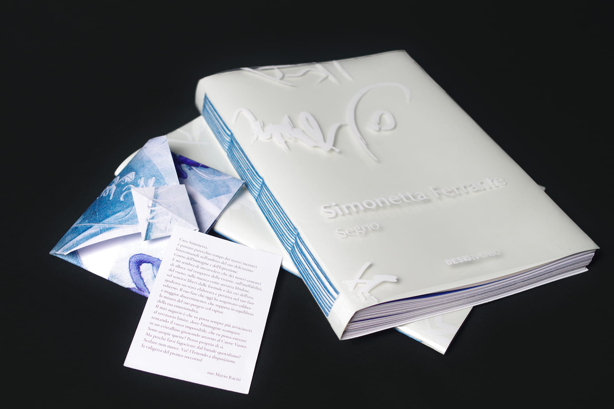
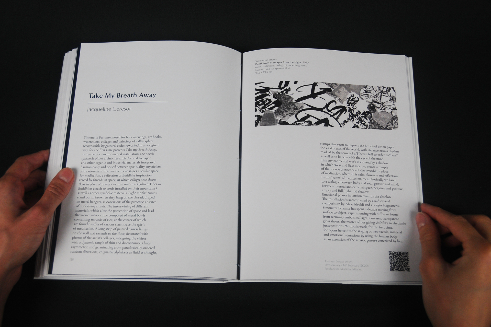
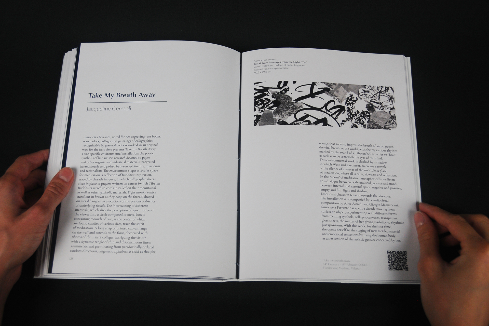

Simonetta Ferrante
Group members: Nadia Barbanti, Irene Fazzari, Selene Garresio,
Alessandra Palombelli, Elisa Tudisco.
My work:
collaborative work on stylistic and content decisions,
layout
design.
Pages: Splendorgel Bianco EW paper, 140 gsm.
Cover:
Light Sensitive Heat Transfer Vinyl | Outer cover: Acetone.
Binding: long stitch.
Fundamentals of design
2021

 
